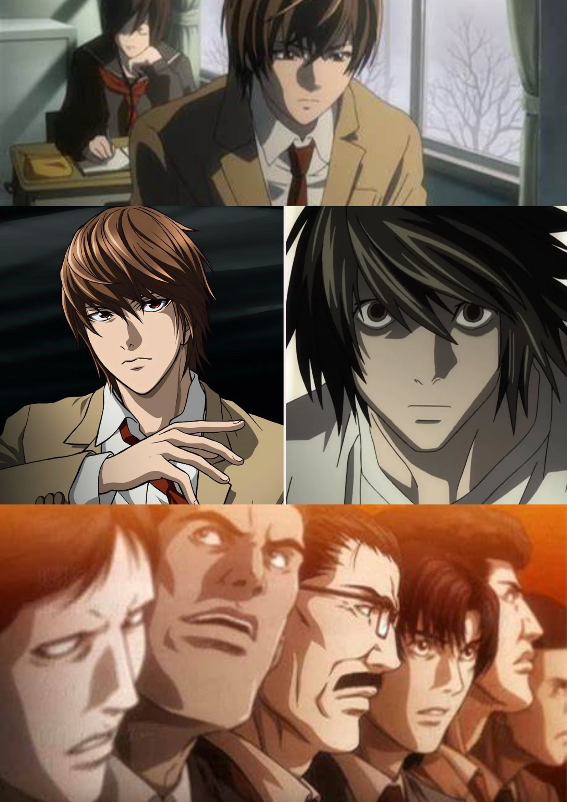

Death Note (stylized as DEATH NOTE) is a Japanese manga series written by Tsugumi Ohba and illustrated by Takeshi Obata. There are many Mangas, Anime Telivision series/movies and Novels made on this story. It's Manga(comics) version contains of 12 volumes. The Death Note Telivision Anime Series contains of 37 episodes.
This whole series focuses on a teenage high school student(later in college) named Light Yagami, a topper in his school, who spots a falling notebook from the sky with the name "Death Note", a notebook that can kill any person by simply writing his/her name in it. He picked it up and decided to give it a try. When he realized that the notebook worked in killing people, he met Ryuk, a Shinigami who dropped his Death Note from the Shinigami Realm as he was bored. Light started to kill criminals all over the world.
 Soon after, L(a world-famous detective) caught the attention of the murderer and worked on tracking him. People called the murder 'Kira'. Then Light worked with L and pretended that he was also helping him to catch 'Kira' that is. himself. He killed many innocent people on his way.
L from the start suspected that Light is Kira but was often denied by Light's Father - Soichiro Yagami who thought Light was innocent. Misa, a teenage girl got attracted to Light,because Light killed the criminals, who killed her parents with the Death Note. Misa also got another Death Note from another Shinigami named Rem. Together Light and Misa managed to kill a huge number of people.
Despite being suspected by L, Light and Misa somehow pretended to act that they are not "Kira". Light managed to Kill L and L died peacefully while eating his chocolate. L was the one who suspected from the start that Light is Kira. Now as L died and The Kira task force including Light's father and many others chose not to announce L's Death publicly and appoint Light as the New L. Light now functioning as both 'Kira' and L, tried to make many moves for his benefit.
When L's Successors - Near and Mello found out the L was dead, in the end, they managed to Catch Light and other killers. Finally, at last, Ryuk writes the name of Light on his death Note. According to the rules of the notebook - humans will neither go to heaven or hell, that's why Light died in the middle of the staircase